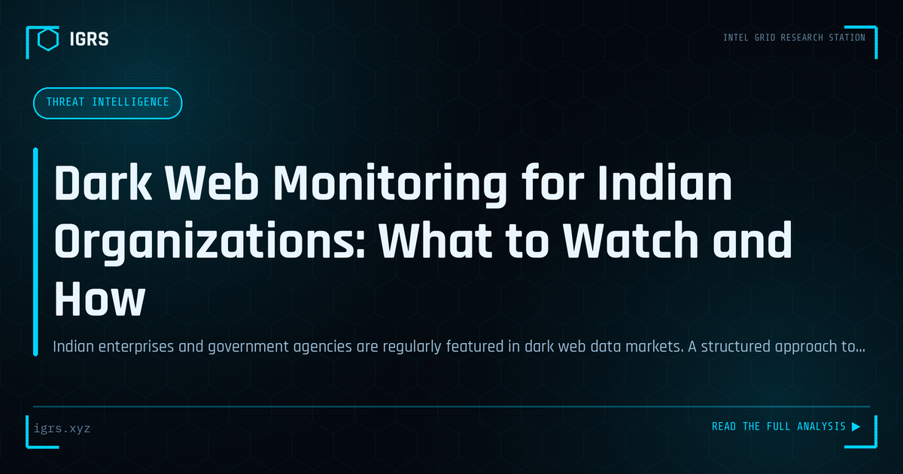

Dark Web Monitoring for Indian Organizations: What to Watch and How
| File No. | IGRS-015/2026 |
| Subject | Operational guide to dark web intelligence collection for Indian enterprise and law enforcement |
| Category | Threat Intelligence |
| Author | Manuj Kumar Pandey |
| Published | 2026-04-05 |
| Reading time | 12 minutes |
Indian enterprises and government agencies are regularly featured in dark web data markets. A structured approach to monitoring what is being traded about your organization.
Understanding Dark Web Threats to Indian Organisations
The dark web has become a thriving marketplace for stolen Indian data. Credential dumps, Aadhaar and PAN databases, banking details, and corporate documents routinely surface on dark web forums and, increasingly, on Telegram channels that act as the dark web's more accessible front door. For Indian organisations and investigators, dark web monitoring is no longer optional — it is an essential early-warning system. This guide explains what appears on the dark web about Indian targets, how to monitor it, and how to respond when your data is found.
What Appears on the Dark Web About Indian Targets
| Data Type | Typical Source | Risk |
|---|---|---|
| Employee credentials | Breach dumps, infostealer logs | Account takeover, network access |
| Customer PII | Database breaches | Identity theft, fraud, DPDP liability |
| Aadhaar / PAN data | Leaked government and private databases | Identity fraud, SIM fraud |
| Banking credentials | Phishing, infostealers | Financial fraud |
| Corporate documents | Insider leaks, ransomware | Espionage, extortion |
| Network access | Initial access brokers | Ransomware precursor |
A particularly important trend in India is the migration of breach trading to Telegram. Large breach dumps frequently appear on Telegram channels before or instead of traditional dark web forums, making Telegram monitoring essential for any India-focused threat intelligence program.
Free Dark Web Monitoring Tools
Organisations can begin dark web monitoring with free resources before investing in commercial platforms:
| Tool | URL | Function |
|---|---|---|
| Have I Been Pwned | haveibeenpwned.com | Check emails/domains in known breaches |
| DeHashed | dehashed.com | Credential and data search |
| IntelX | intelx.io | Dark web, paste, and leak search |
| Ahmia | ahmia.fi | Tor search engine (surface-accessible) |
| Breach Directory | breachdirectory.org | Leaked credential lookup |
Commercial Dark Web Intelligence Platforms
For continuous, automated monitoring at scale, organisations turn to commercial threat intelligence platforms. Recorded Future, Digital Shadows (now ReliaQuest), Flashpoint, and KELA offer dark web monitoring with India-relevant coverage, automated alerting, and analyst context. These platforms monitor forums, marketplaces, and Telegram channels continuously, alerting organisations the moment their data, domains, or executives are mentioned.
Setting Up a Monitoring Workflow
An effective dark web monitoring program follows a structured approach:
- Register your domains and executive identities with monitoring services
- Set up alerts for company name combined with terms like "breach", "leaked", and "dump"
- Monitor paste sites (Pastebin, Ghostbin) for code and credential leaks
- Track relevant Telegram channels where Indian breach data appears
- Monitor breach notification services for employee email addresses
- Establish a response playbook before you need it
Is Dark Web Monitoring Legal in India?
Monitoring the dark web for threat intelligence and breach detection is legal in India. Accessing the Tor network itself is not illegal. However, the line is crossed when one purchases stolen data, accesses illegal content, or engages in criminal transactions. Organisations and investigators must monitor passively, within legal boundaries, and should never purchase leaked data even to "verify" a breach — doing so may constitute receiving stolen property and funds criminal operations.
Responding When Your Data Is Found
Discovering your organisation's data on the dark web triggers an immediate response sequence:
- Force password resets for all exposed credentials immediately
- Report to CERT-In within 6 hours as required by directions
- Notify affected individuals under DPDP Act 2026 obligations
- Investigate the breach source — how did the data escape?
- File an FIR under Section 66 IT Act and Section 318 BNS where applicable
- Engage forensics to determine scope and prevent recurrence
Dark Web Monitoring and DPDP Compliance
The DPDP Act 2026 makes dark web monitoring a practical compliance tool. Organisations have obligations to protect personal data and report breaches. Proactive dark web monitoring helps detect breaches early — sometimes before the organisation is even aware data has been exfiltrated — enabling faster notification and reducing both regulatory penalties and reputational damage. With penalties reaching ₹250 crore under the Act, early breach detection through dark web monitoring is a sound investment in compliance and risk management.